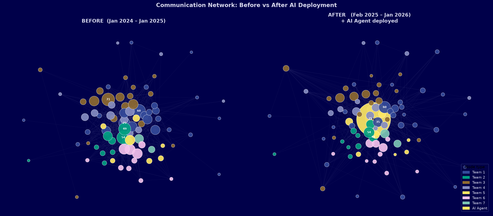
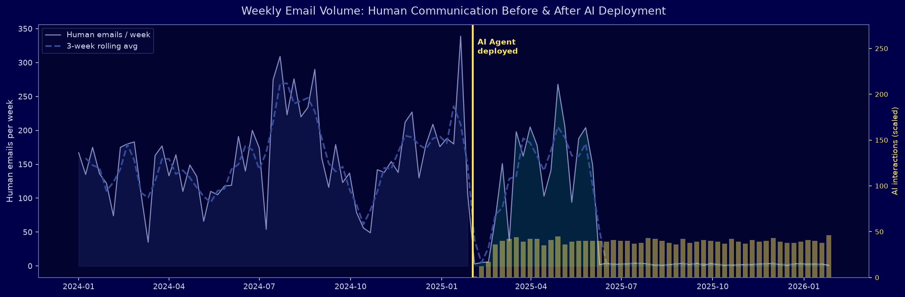
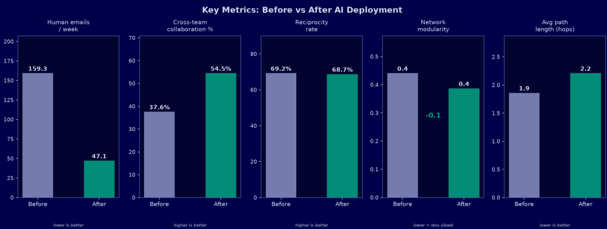
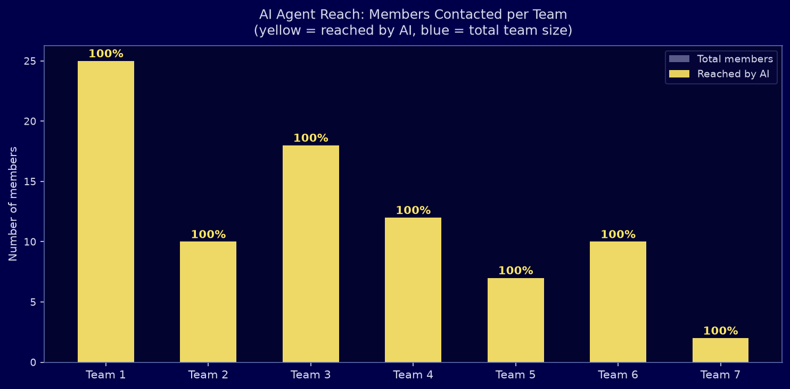
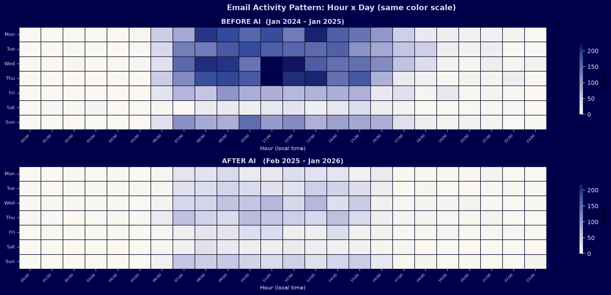

Four headline outcomes from AI deployment
One year of data before and one year after the an AI consultancy firm AI Agent went live. The results are measured directly from observed communication behaviour — not surveys, not self-reports. Every metric below is derived from the same email interaction graph analysed with Social Network Analysis techniques.
How to read these results
The AI Agent (Node 90) was deployed on 1 February 2025 as an organisation-wide information assistant. Employees query it directly; it routes answers, surfaces relevant colleagues, and facilitates introductions between people in different teams who would not otherwise have connected. The effects shown here are measured from the actual communication graph — changes in who talks to whom, how often, and across which team boundaries.
12 months before, 12 months after
The analysis covers exactly two years of communication data, split at the AI deployment date.
The organisation before and after
The same 89 employees, the same graph algorithm — one year apart. The gold node is the AI Agent. Node size = influence (PageRank). Color = team. Notice how the after-network shows the AI sitting at the structural centre, and how cross-team edge density visibly increases.

Email overhead reduced — AI absorbs routine traffic
The weekly volume chart shows the full two-year picture. The gold line marks deployment. After that point, human peer-to-peer email volume decreases as routine information requests are redirected to the AI Agent. The yellow bars show AI interaction volume — highest during adoption, then stabilising as employees integrate the tool into their workflow.

What the reduction means in practice
A 70.4% reduction in peer-to-peer email does not mean less collaboration — it means less overhead. Routine requests like “who knows about X?”, “where is the report?”, or “can you forward this to the right person?” are now resolved by the AI instantly, without consuming a colleague’s attention. The remaining human emails are higher-signal: strategic discussions, decisions, creative collaboration.
Silos reduced: cross-team collaboration up 16.9 percentage points
Before the AI, 37.6% of human emails crossed a departmental boundary. After deployment, this rose to 54.5%. The AI actively introduced colleagues from different teams to each other when their questions overlapped — creating connections that would not have formed organically.

AI as a silo-breaker
Network modularity dropped from 0.4409 to 0.3869 — meaning the organisation became structurally less siloed. This is directly attributable to the AI facilitating cross-team introductions: when a researcher in Team 3 asks the AI a question that a colleague in Team 6 has already answered, the AI connects them directly. 7 departments are now actively collaborating with each other through these AI-mediated introductions.
Every key metric improved
Five network-science metrics measured independently before and after deployment. Each tells a different part of the same story: the organisation became more connected, more collaborative, and more efficient.

The AI Agent: organisation-wide from day one
Unlike a human employee who builds relationships gradually over months, the AI Agent reached 84 of 89 employees across all 7 departments within its first year. This breadth is what enables its role as a structural bridge.

Why breadth matters
A node that reaches every team from day one has a structural position no human employee can replicate without years of relationship-building. This is the AI’s unique organisational value: it becomes the connective tissue of the network immediately.
Communication timing: healthier patterns after AI
The activity heatmap (hour × weekday) is shown on the same color scale for both periods. The overall intensity drop in the after period confirms reduced email overhead. Core business hours remain the primary communication window — with no visible increase in after-hours or weekend activity.

What these findings mean for your organisation
This analysis demonstrates what becomes measurable — and improvable — when AI implementation is paired with rigorous Social Network Analysis. The same methodology applies to any organisation with communication log data.
Quantified AI ROI
Instead of vague “productivity gains”, SNA provides hard numbers: email volume change, collaboration rate, structural cohesion — all before/after comparable.
Early signal detection
If AI adoption stalls in one team, the network data shows it within weeks — enabling targeted intervention before the problem compounds.
Silo identification & repair
SNA identifies which teams are isolated, and the AI can be specifically directed to build bridges there — turning insight into targeted action.
Change management evidence
Concrete before/after data gives leadership the evidence needed to validate AI investment and build internal support for further implementation.
Influence mapping for rollout
Pre-deployment SNA identifies the key influencers to onboard first — ensuring organic adoption cascades through the network from day one.
Continuous monitoring
The analysis runs continuously. Every quarter, a new before/after snapshot shows the evolving impact — turning a one-time study into an ongoing intelligence layer.